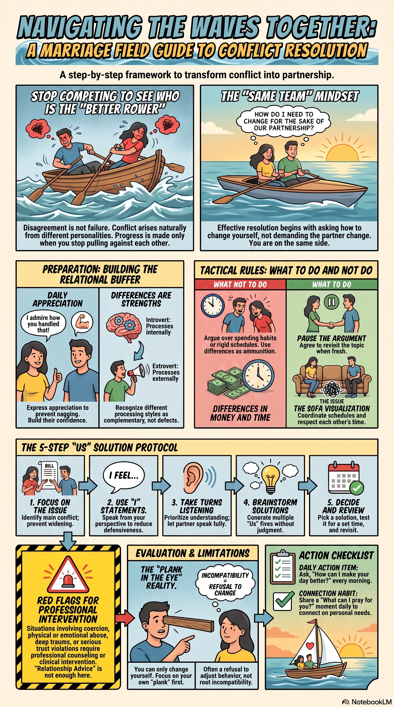
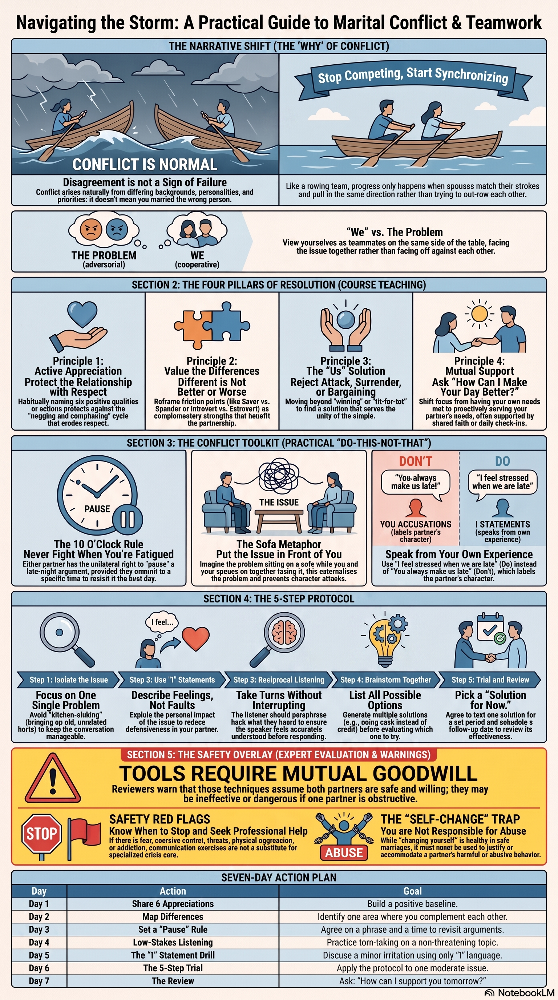
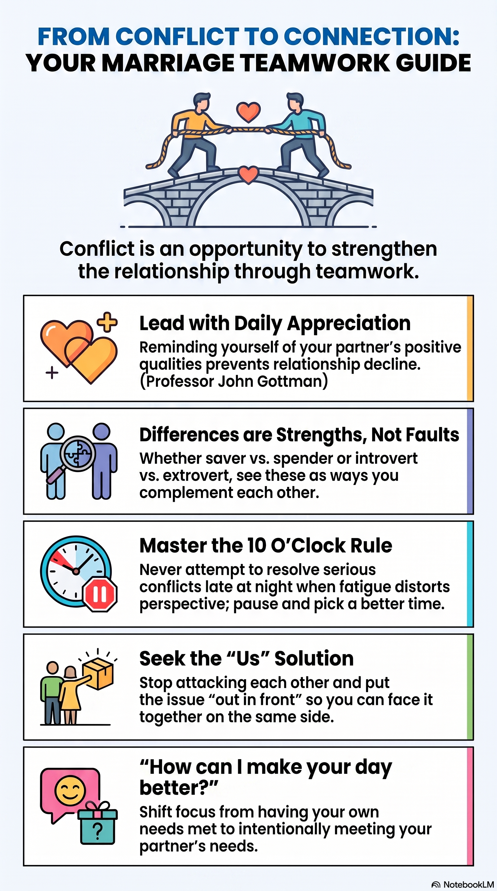

Source and artifact reconciliation
This module reconciles 5 verified sources and 17 completed artifacts from the Episode 3 research package. Eleven review-safe artifacts are stored locally with this prototype. Six heavy media artifacts stay in the local research package and are named here without being published.
- 5sourcesEpisode 3 transcript plus four independent model reviews
- 17artifacts3 audio · 3 video · 3 decks · 3 graphics · 3 reports · 1 quiz · 1 flashcard set
- 11stored locallyDecks, graphics, reports, quiz, and flashcards copied into this prototype
- 6withheldAudio and video held in the research package pending rights and approval
Primary source
Episode 3 transcript, The Marriage Course
A partial transcript of a 1:44:01 session. Dialogue is missing across roughly 00:10–00:19, 00:30–00:39, and 01:00–01:28. Everything on this page is provisional to that extent, and no conclusion here should be presented as covering the whole episode.
Chaplain and counsellor lens
ChatGPT independent review
Strongest on facilitator safeguards. It supplies the distinction this module builds on: a preference, a skill gap, a broken agreement, and abusive conduct are four different problems and must not be treated as one.
Systems-analyst lens
Claude independent review
Strongest on the design of the tools. It names the pause rule as a circuit breaker that works because either spouse can call it unilaterally, and it identifies unreciprocated service as a structural warning sign rather than a virtue.
Brotherly friend lens
Gemini independent review
Written under a 1,300-word ceiling. Reconciliation note: it describes a speaker–listener tool and a four-pattern taxonomy of escalation, invalidation, negative interpretation, and withdrawal that do not appear in the supplied transcript. Those are treated here as reviewer framing, not as Episode 3 content.
Grandfatherly theologian lens
Grok independent review
Strongest on where a practical session stops short of a theology of conflict. Reconciliation note: it gives the presenters a surname the transcript never states, so that attribution is carried here as unverified.
Mission brief
Conflict is a task, not a verdict
Original source teaching
What the session actually teaches
Episode 3 runs one hour and forty-four minutes and is presented by a married couple identified in the transcript only as Nicky and Sila. It opens by normalising disagreement. Spouses arrive with different backgrounds, desires, priorities, and personalities, and each of us is selfish to some degree, so conflict is inevitable. It is not evidence that the wrong person was chosen. Burying a difference is treated as worse than discussing it.
From there the session teaches four principles for resolving conflict — remember your partner’s positive qualities, recognise that differences are good, look for an “us” solution, and support your partner — alongside a timing rule that lets either spouse postpone a late-night argument and a five-step procedure for reaching a workable decision. A rowing illustration carries the argument: two people pulling against each other lurch and stall; two people matching strokes glide.
Teaching map: 00:01:25–00:03:41 · 00:04:44–00:09:29 · 00:20:00–00:29:43 · 00:40:27–00:51:43 · 01:29:02–01:35:05
U.S.M.C. Ministries analysis & application
The husband’s assignment
Your assignment is not to grade your wife’s conflict style. It is to identify the move you make when pressure rises, say it out loud without diagnosing her, and change it. All four independent reviews converge on the same limit: these tools work between two people who are safe, free to disagree, and willing to change. They do not work on a problem that is not a disagreement.
So this module keeps two jobs separate. Where the marriage is ordinary and basically safe, learn the protocol and run it. Where the pattern involves fear, control, or harm, stop running couple exercises and get individual help. Sorting which one you are in is the first act of leadership, and it is a judgement you make honestly rather than the one that protects your self-image.
End state: You can name your own conflict move in concrete behaviour, hold a pause that includes a real return, and run one disagreement through five steps to a reviewable decision.
Scripture frame
Responsibility with a stated limit
If possible, so far as it depends on you, live peaceably with all.
Romans 12:18 (ESV)
Read each passage in its wider context before applying it. The caveat under each one is ministry analysis, not the text.
Romans 12:18
Original source teaching: Paul places genuine responsibility on the believer to pursue peace, and this module treats that as binding on a husband’s conduct in every disagreement.
U.S.M.C. Ministries analysis: The verse builds in two limits — “if possible” and “so far as it depends on you.” Peace is not always available, and it is never wholly in one person’s power. This text does not require a husband to purchase quiet by concealing wrong, and it does not make a wife responsible for a peace her husband refuses.
Matthew 7:3–5
Original source teaching: Episode 3 uses the speck and the plank near 00:53:30 to argue that self-examination comes before correction, and concludes that the only person you can change is yourself.
U.S.M.C. Ministries analysis: Jesus addresses hypocritical judgement inside the community of disciples. He tells the man to remove his own plank so that he can see clearly to help — not to fall silent. The passage does not mean a harmed spouse must locate an equal fault of her own before naming serious wrong, and it is not a rule that the person being harmed carries the change.
Ephesians 4:26–27, 31–32
Original source teaching: The session’s counsel to apologise before sleeping even when the issue stays open runs along the same line as Paul’s warning not to let anger take root.
U.S.M.C. Ministries analysis: Paul is naming bitterness and the foothold it gives, not setting a nightly deadline for resolution. Kindness and forgiveness in this passage are not a demand that a wronged person produce immediate emotional closure, and they do not cancel accountability, boundaries, or the time repair actually takes.
Proverbs 15:1, 18
Original source teaching: A gentle answer turns away wrath, and a hot temper stirs up strife. This underwrites the session’s emphasis on tone and timing.
U.S.M.C. Ministries analysis: Proverbs give general wisdom about how life usually goes; they are not guarantees. A gentle answer reliably lowers heat with a person who is arguing. It does not make an intimidating person safe, and its failure is not proof that the gentler spouse did it wrong.
James 1:19–20
Original source teaching: Quick to hear, slow to speak, slow to anger. This is the plainest scriptural warrant for the turn-taking and listening rules in the five-step protocol.
U.S.M.C. Ministries analysis: Slow to speak is a discipline of the tongue, not a vow of silence about real harm. James goes on to require doing, not only hearing, so a husband who listens beautifully and changes nothing has not obeyed this text.
Core conflict framework
Four principles, four postures, one externalised problem
The session’s framework is genuinely usable. What follows states each part as the source gives it, then names the husband’s move and the guardrail that keeps the move honest.
01
Remember her positive qualities
Original source teaching: Appreciation is taught as protection: keeping admiration spoken guards the marriage from sliding into nagging and complaint, and the journal exercise asks each spouse to write six appreciations — a mix of character and concrete action — and read them aloud.
U.S.M.C. Ministries analysis & application: Name six specific things, half character and half action, and say them without attaching a request. “I admired how you handled the call with your mother” is worth more than “you’re great.”
Guardrail: Appreciation must not be used to soften a hard truth into silence, and it must never function as payment for an unaddressed injury. If you cannot raise a real concern, more compliments will not fix that.
02
Treat differences as differences
Original source teaching: Decision speed, introversion and extroversion, internal and external processing, punctuality, and money habits are offered as differences rather than defects. The reframe the session lands on is that neither spouse is better with money; they are better at different things with money.
U.S.M.C. Ministries analysis & application: Take one recurring friction point and write the sentence that converts a ranking into a division of labour. Then design a team procedure for it instead of relitigating it monthly.
Guardrail: Not every difference is a neutral style. Hidden debt, a broken agreement, compulsive spending, or withholding access to money is not a “money personality.” Sort each friction into a preference, a skill gap, a broken agreement, or a safety concern before applying this principle.
03
Look for an “us” solution
Original source teaching: Three postures are rejected as ineffective — attacking to force your way, surrendering to avoid confrontation, and bargaining that decays into “I won’t do my part because you haven’t done yours.” The alternative is working the issue together, sometimes after pressing an imaginary pause button.
U.S.M.C. Ministries analysis & application: Say the issue in one sentence before you say anything about her. If you cannot state it in one sentence, you are not ready to discuss it yet.
Guardrail: “We’re on the same team” is a description of two people who both hold power, not a slogan that settles who is right. If team language is being used to require agreement, it has stopped meaning anything.
04
Support her
Original source teaching: The final principle contrasts expecting a spouse to meet every need with focusing on meeting hers, illustrated by a husband who asked each morning how he could make his wife’s day better. The session grounds this in looking first to God for love, significance, and security, and offers a daily practice of brief mutual prayer with a plain alternative question for those not comfortable praying.
U.S.M.C. Ministries analysis & application: Ask the question once a day for a week and do one reasonable thing that comes back. Ask before you decide what she needs.
Guardrail: In the story the practice worked because it was returned. Service that runs one way for months without reciprocity is a signal to get help, not a standard to sustain. And no one should be told that anxiety, depression, or trauma would lift with more faith.
The four postures, named in a husband’s terms
Source teaching supplies the first three labels. The behavioural descriptions are ministry analysis.
Attack
Volume, speed, stacked evidence, character verdicts, dragging in ten years of history, threatening the relationship to win the hour.
Cost: You may end the argument. You will not be told the truth next time.
Surrender
Agreeing to end the discomfort, going quiet, leaving with no return, saying “fine” and retaliating later in a smaller way.
Cost: The issue survives untouched and collects interest. Note carefully: surrender can also be what fear looks like, and that is a different problem entirely.
Bargain
Trading compliance, keeping a ledger, holding your part hostage until she performs hers.
Cost: The marriage becomes a contract that either party can breach, and the ledger always reads in your favour.
Collaborate
One issue, stated plainly. Your own contribution named first. Turn-taking. A decision small enough to test.
Cost: It is slower, it requires you to be wrong out loud, and it is the only one of the four that compounds.
Put the issue in front of you
Original source teaching: The session’s most transferable image places a couple at opposite ends of a sofa with the contentious issue sitting between them, blocking sight and hearing. Focusing on the issue means lifting it out from between you and setting it out in front, so you can move together and face it rather than face off.
U.S.M.C. Ministries analysis: Externalising the problem is not the same as excusing the person. Your conduct still belongs to you. The image works because it changes the seating, not because it dissolves responsibility — and a husband who uses “let’s attack the problem” to avoid saying “I did that” has inverted it.
Critical guardrail: Independent review flagged a real failure mode here: the same image, used on an issue that is actually one person’s ongoing harm, converts a one-sided problem into a shared one. Externalise disagreements. Do not externalise conduct.
What the source gets right
All four independent reviews agree on the same strengths, and this module adopts them without hedging. Decoupling “we have conflict” from “we chose wrong” removes a genuine source of panic. Insisting that appreciation is a daily habit rather than a mood gives a husband something to do on an ordinary Tuesday. Recasting a status contest into a division of labour dissolves an argument that cannot otherwise be won.
The two strongest contributions are structural. A pause rule that either spouse can call unilaterally is well designed precisely because it does not require agreement in a moment when agreement is unavailable. And the five steps are a real protocol: they interrupt escalation with sequenced, observable actions rather than asking anyone to feel differently first. The distinction between requesting change and demanding it is a compact ethical boundary worth memorising.
Where caution is required
The framework assumes symmetry — two people with roughly equal power, both free to speak, both able to say no without consequence. Every reviewer named this as the central blind spot, and it is the reason this module carries a referral boundary rather than a footnote. Where that symmetry does not exist, the tools do not merely underperform. Several of them invert.
A husband should also know that some of the session’s most quotable lines are the ones that need the most care. They are not wrong between equals. They are hazardous when transposed onto a relationship where one person is the source of harm.
The only person we can change is ourselves.
Source teaching, near 00:53:45
Freeing between two safe people, because it ends the futile project of managing another adult. Used on someone being harmed, it relocates responsibility for another person’s conduct onto the person absorbing it. Personal agency is not the same as personal fault.
We’re not incompatible unless we refuse to change.
Source teaching, near 00:56:06
Motivating for a flexible couple stuck on habits. As a general account of why marriages fail, it is too sweeping — and it can pressure someone to keep adjusting to untreated addiction, repeated betrayal, or an unsafe home. Willingness to change is necessary. It is not always sufficient.
Trying to make our husband or wife think and behave like us never works.
Source teaching, near 00:20:10
Directionally true about coercion, and stated as an absolute. People do influence and change each other, and marriages do require some behaviour to change. What reliably fails is compelling it.
- The transformed-marriage story near 01:29:17 is a second-hand anecdote with an unusually clean arc. It is inspiration, not a mechanism you can rely on.
- The research citation near 00:08:34 — that a well-known researcher can tell within five minutes whether a relationship is in trouble, with appreciation as the key indicator — is compressed. Do not repeat the five-minute framing as settled fact, and do not try to diagnose your marriage with it.
- Humour is commended as the oil in the engine, and teasing about a spouse’s speech style is modelled. There is no guard attached. Add one: humour that mocks vulnerability is contempt wearing a friendly face.
- Introvert and extrovert, saver and spender, are useful folk categories stated as clean binaries. They become excuses the moment “that’s just how I am” closes a conversation — which the session itself warns against elsewhere.
- Processing differences may reflect neurodivergence, trauma, hearing or language differences, or exhaustion rather than personality. Adapt the format — written notes, longer pauses, a walk instead of eye contact — without abandoning the aim.
Husband’s self-check
Use these privately. They are prompts, not a scorecard, and none of them is about her. If an answer stings, resist building a case and name your next action instead.
- I can describe my first predictable move under pressure in behaviour, not in temperament.
- I state the problem in one sentence before I say anything about my wife.
- I name my own contribution before I assign hers.
- My pauses include a specific return time, and I have kept the last three.
- I do not follow her from room to room, block a doorway, take her phone or keys, or stand over her to keep a conversation going.
- I can hear a concern without immediately explaining my intent.
- I do not use sarcasm, mockery, imitation, or jokes at her expense during a disagreement.
- I do not invoke Scripture, headship, prayer, money, or the children to end a discussion I am losing.
- When conflict happens in front of our children, I repair it in front of them and never make them messengers, referees, or allies.
- I can tell the difference between a preference, a skill gap, a broken agreement, and a safety concern — and I respond to each differently.
Pause and return
The pause-and-return protocol
Original source teaching
Original source teaching
The session names bad times to argue — in front of others, just before a special occasion, in a rush, on walking through the door — and identifies late at night as the worst, because fatigue distorts perspective. It then teaches a rule borrowed from friends, in which either spouse can unilaterally call a late-evening argument paused and postponed to a better time, perhaps the next evening or over coffee at the weekend.
Two refinements matter. Waiting for a better time requires self-discipline, and the postponement does not mean going to bed still angry: if unkind things were said, apologise and forgive so the relationship is repaired even while the issue stays open.
U.S.M.C. Ministries analysis & application
U.S.M.C. Ministries analysis & application
A pause without a return is not a pause; it is abandonment with better manners. The rule below is what makes the source’s tool honest, and it must be negotiated while you are calm, not invented mid-argument.
- Either spouse may call the pause. It does not require the other’s agreement, and it is not overruled by whoever is more articulate.
- The person calling it names a specific return time out loud: “I am too activated to speak carefully. Twenty minutes. I will be back at 7:40.”
- A minimum of twenty minutes is usually needed for a body to come down. Set a maximum too, so “later” cannot mean never.
- During the pause, do not draft a closing argument, text allies, drink, drive angry, or punish with silence. Walk, breathe, pray.
- If the named time becomes impossible, send a short message with another specific time. One missed return is a mistake; a pattern of missed returns is the actual issue.
- Repair the conduct before sleep even if the topic stays open. “I was contemptuous and I am sorry” does not require the budget to be solved first.
- Do not use the apology to close the subject. “I said sorry, so can we drop it?” converts repair into a control tactic.
This is not a pause
- Leaving with no return time.
- Refusing every proposed time until the concern expires.
- Using the pause to escape accountability you have already been given.
- Following her, blocking the exit, or requiring her to stay while you regulate.
One clarification the source does not make. If you are afraid of your spouse, leaving is not a “pause” and you owe no return time. A safety exit and a conflict pause are different actions with different rules, and nothing on this page should be read as requiring anyone to come back to a room that is not safe.
Five-step protocol
The five-step problem-solving protocol
The five steps are stated by the source near 00:47:12–00:51:43. The execution note and failure mode under each are ministry analysis.
Preconditions
- One issue, agreed in advance and stated in a single sentence.
- A time both of you actually chose, with a stated length — thirty to forty minutes is plenty.
- Both of you free to decline, pause, or reschedule without penalty.
- Not the most explosive issue in your marriage. Learn the protocol on something moderate.
1
Focus on the issue causing the conflict
Original source teaching: Arguments widen until nobody remembers what started them. Identifying and staying on the main issue prevents escalation.
U.S.M.C. Ministries analysis & application: Write the issue on paper in one sentence and put it where you can both see it. Anything else that surfaces gets written on a second list for another day.
Failure mode: Kitchen-sinking. The moment you reach for an unrelated failure from two years ago, you have left the protocol.
2
Use “I” statements
Original source teaching: “You always” and “you never” label character. Describing your own experience — “I was upset that I cleared up alone after dinner last night” — is more workable.
U.S.M.C. Ministries analysis & application: Name the event, the effect on you, and what you want. Keep it to one event with a date.
Failure mode: A verdict wearing the grammar of a feeling. “I feel disrespected whenever you disagree with me” is still an accusation. And when conduct needs naming plainly — money moved without consent, a threat made — say the conduct.
3
Listen and take turns
Original source teaching: In an argument both people want to be understood and neither wants to understand. The ground rule is to take it in turns to talk, which matters most when one spouse is better with words.
U.S.M.C. Ministries analysis & application: Summarise what she said and ask what you missed before you reply. If you are the faster talker, take the second turn.
Failure mode: Listening as reload time. If your summary is a weaker version of her point that is easy to dismiss, you were building a case.
4
Brainstorm possible solutions
Original source teaching: Once the first three steps are done, options come more easily than expected. On money the session lists changing who organises the finances, building an annual budget together, using cash instead of credit, a weekly spending review, or asking for help from someone competent.
U.S.M.C. Ministries analysis & application: Write at least four options before evaluating any of them, and include one you do not like. Say them out loud.
Failure mode: Proposing your preferred answer first and calling it brainstorming.
5
Decide the best solution for now, and review later
Original source teaching: Pick a solution for now and try it. If it works, the issue stops causing conflict. If it does not, go back to the list and try another.
U.S.M.C. Ministries analysis & application: Write who does what, by when, and the date you will review it. Two weeks is usually long enough to learn something.
Failure mode: Treating agreement as final. And this: compliance produced by fear is not a decision. If she agreed quickly and looked relieved, check whether she was free to say no.
The session adds two boundaries this module keeps. Requesting change is good; demanding it is harmful. And you cannot assume your spouse knows what matters to you — the things that frustrate and hurt have to be said.
Required field action
One-week field exercise
Success is completion and learning, not a conflict-free week and not identical feelings. Either spouse may stop any day of this without explanation. If fear or contempt dominates, stop the exercise and get help rather than powering through.
Day 1
Name your own move.
Write, privately, what you do first when conflict becomes uncomfortable — in behaviour, not temperament. Then say it to your wife in one sentence without diagnosing hers.
Day 2
Six appreciations.
Each writes six things you appreciate — three character, three concrete action — and reads them aloud. No rebuttal, no requests attached.
Day 3
Negotiate the pause rule.
Agree the phrase, the minimum and maximum length, and how a return time gets named. Write it down. Ask what would make it feel fair to her.
Day 4
Sort one friction.
Take one recurring disagreement and decide together whether it is a preference, a skill gap, a broken agreement, or something that needs outside help. Handle it accordingly.
Day 5
Listen back.
Pick a low-stakes concern. She speaks for five minutes; you summarise content and significance, ask what you missed, and revise until she says it is fair. Do not require her to do the same.
Day 6
Run the five steps.
Take the Day 4 friction through all five steps in forty minutes or less. Finish with a written decision, an owner, and a review date.
Day 7
After-action review.
Fifteen minutes. What helped? What felt unsafe or unhelpful? Did the pause get used, and did the return happen? Record one thing to keep and one to change.
Observable finish line: You interrupted your usual conflict move at least once, honoured every physical and verbal boundary, returned at the time you promised or named a specific new one, and produced one written decision with a review date.
Discussion prompts
Invite; do not assign. Your wife may decline any of these, stop partway, or answer a different one. A prompt she did not agree to is an interrogation.
- When conflict starts, what do I do that makes it harder for you to stay in the room?
- Which of our differences have I been quietly scoring as better and worse rather than different?
- What are our genuinely bad times to argue, and what pause phrase would you actually honour?
- When we pause something, do we come back to it — or has “later” been doing the work of “never”?
- Which of the five steps is hardest for each of us, and why?
- When I ask you to change something, does it usually land as a request or a demand?
- How do we repair the relationship on a night when the issue is not solved?
- Where are these tools the wrong tool for us, and what would wise outside help look like?
Optional conversation guide
A thirty-minute structure for the Day 6 run. Invite; do not assign. Either of you may call the pause at any point, including in the first minute.
- Set the conditions (3 min): “I want to understand this, not win it. Is now workable for thirty minutes? Either of us can call a pause and we will name a return time.”
- State the issue (2 min): One sentence, agreed out loud, written down where you can both see it. Anything else goes on the second list.
- Speaker one (7 min): One event, the effect on you, what you want. No “always,” no “never,” no history that is not this issue.
- Listen back (3 min): “What I heard was… What did I miss?” Revise until she says it is fair. Do not rebut.
- Switch (10 min): Same structure, equal time. If you are the faster talker, this is where you keep your mouth shut.
- Decide and close (5 min): Four options minimum, then one to test. Who does what, by when, review date. End with appreciation or prayer if that is mutually welcome.
If voices rise, contempt appears, or either of you is flooded, stop and name a return time. If returns repeatedly become frightening, degrading, or circular, that is not a technique problem — move to the referral boundary below.
Claims carried forward for verification
Ministry analysis. These were flagged by more than one independent review and are not settled on this page.
- The presenters’ surname. The transcript gives only first names; one review supplies a surname the transcript never states.
- The five-minute prediction claim and the appreciation indicator attributed to a named researcher near 00:08:34, which should be checked against a primary publication before being repeated.
- The compliment quotation attributed to Mark Twain near 00:06:42, commonly attributed and thinly sourced.
- The surgical passage read near 00:56:15, attributed in the transcript to Richard Seltzer. Authorship, exact wording, and reprint permission all require checking; it is deliberately not reproduced here.
- The transformed-marriage account near 01:29:17, which is second-hand and should never be cited as evidence.
- Transcript completeness. Roughly 00:10–00:19, 00:30–00:39, and 01:00–01:28 carry no dialogue in the supplied source.
Resource room
Seventeen completed artifacts came out of the Episode 3 research package. Eleven are stored locally with this prototype and open from here. Six are named but not published. Everything below was generated by NotebookLM from the source material: treat it as a study aid, not as independent authority, and read it against the caution section above.
Slide decks 3 artifacts
PDF exports. Large files; not yet size-optimised for the web.
Engineering Us
Open slide deckA deck built from the systems-analyst reading of the episode: the marriage treated as a system with failure points and feedback loops. Not reviewed line by line.
Marital Conflict Blueprint
Open slide deckA deck walking the conflict pathway from the four principles through the five steps. Not reviewed line by line.
The Marriage Blueprint
Open slide deckA broader overview deck covering the session as a whole. Not reviewed line by line.
Field graphics 3 artifacts
Single-page visual summaries. Two of the three contain visible generated-text errors, noted per graphic.
Field graphics
Marriage Conflict Resolution Field Guide
Open full-size graphic{kind=link}

Headlined “Navigating the Waves Together.” Covers the rowing contrast, daily appreciation, differences as strengths, a do-and-do-not panel, the five-step protocol, and a red-flag panel directing coercion, abuse, trauma, and serious trust violations to professional help. Review note: several captions contain garbled generated text.
Field graphics
Marriage Conflict and Teamwork Guide
Open full-size graphic{kind=link}

Headlined “Navigating the Storm.” The most complete of the three: four pillars, the conflict toolkit, the five-step protocol, a seven-day action plan, and an explicit safety overlay stating that the tools require mutual goodwill and that changing yourself must not be used to accommodate abuse. Review note: several captions contain garbled generated text.
Field graphics
Marriage Teamwork Guide
Open full-size graphic{kind=link}

The simplest of the three: five cards covering appreciation, differences, the timing rule, the “us” solution, and the daily support question. Cleanly typeset, but it carries no safety panel at all — do not hand it out on its own.
Readable reports 3 artifacts
Markdown study aids in three different registers.
Readable reports
Conflict Resolution and Partnership: A Briefing on The Marriage Course Episode 3
Read the local Markdown reportAn executive briefing mapping the four principles and the five steps. The most neutral of the three reports and the best starting point.
Readable reports
From Clashing Oars to Gliding Boats: Mastering Conflict as a Team
Read the local Markdown reportA systems-flavoured treatment written in a family-life-educator voice, working the rowing metaphor through feedback loops and equilibrium. Its systems language is analysis, not measurement.
Readable reports
Why Your Biggest Disagreements Might Actually Be Your Relationship’s Secret Weapon
Read the local Markdown reportA popular-article treatment. The headline overclaims: some disagreements are not a secret weapon, they are a warning. Read it against the caution section above.
Knowledge check 1 artifact
Interactive NotebookLM export.
Knowledge check
Marriage Quiz
Open the quizA knowledge check over the Episode 3 material. Review note: this export loads web fonts from an external host, so it is not offline-clean and is not publication-ready as shipped.
Flashcards 1 artifact
Interactive NotebookLM export.
Flashcards
Marriage Flashcards
Open the flashcardsA flashcard drill over the same material. Review note: same external web-font dependency as the quiz.
Held in the research package 6 artifacts
Three audio briefings and three video overviews. Named here, not published here.
Audio briefing
When Good Marriage Advice Goes Wrong
Named for review · not publishedA critical audio companion on where sound conflict advice misfires. Held in the local research package.
Audio briefing
When Marriage Tools Become Dangerous Weapons
Named for review · not publishedAn audio discussion of the safety inversion at the centre of this module. Held in the local research package.
Audio briefing
Why your partner is not the problem
Named for review · not publishedAn audio treatment of externalising the issue. Held in the local research package; its title needs the caution above attached before it goes anywhere.
Video overview
How to Externalize Marriage Conflict
Named for review · not publishedA short video on the sofa image. Held in the local research package.
Video overview
Navigating Conflict
Named for review · not publishedA longer video overview of the session. Held in the local research package.
Video overview
Resolving Conflict
Named for review · not publishedA longer video overview of the four principles and five steps. Held in the local research package.
Verified NotebookLM notebook
Google account required. Access depends on notebook permissions and the signed-in account. The notebook holds the sources and every artifact, including the six not published here.
Open “TMC Episode 3” in NotebookLMOptional companion journal
The session repeatedly directs couples to written conversations in the companion journal — the six appreciations, the differences map, and the five-steps exercise. It is optional and this module works without it.
The Marriage Course Study JournalAffiliate disclosure: this is an Amazon Associates link. As an Amazon Associate I earn from qualifying purchases, at no extra cost to you.
Complete module 3
Mark complete only after the observable finish line. You can change this status later.